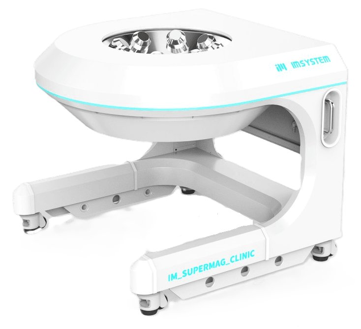

Magnetic navigation · cobot_kim2026
Cobot guidewire
Intravascular collaborative robotic (Cobot) magnetic guidewire

1 / 8


- Family
- Magnetic navigation (magnetic-navigation)
- Devices
- 2026: guidewire with permanent magnet and magnetic polymer tip, tip OD 0.4 mm (kim2026_magnetic, per P6 notes); 2022: 400 um x 10 mm tip unit (3 mm NdFeB magnet + magnetic polymer in a silicone tube) on a 0.014-in Fielder FC guidewire; the advancer moves the guidewire and a 6 F guiding catheter (hwang2022_ecmis p. 4, 8, 12)
- Degrees of freedom
- 2022: coil system gives 5-DOF magnetic control (3 translation, 2 rotation); advancer = Hanyang 5-DOF slave robot used for insertion and retraction (hwang2022_ecmis p. 8); 2026 N.R.
- Push
- Magnetic
- Twist
- Field direction
- Tested up to
- Animal
- Sim-to-real
- None found — No simulation-trained controller found for this robot.
Testing
- Highest level
- Animal
- What was tested
- 2026: phantom (n = 7) and swine (n = 11) procedures vs a manual wire (kim2026_magnetic, per P6 notes); 2022: 2D phantom on OctoMag (4 repeats), 3D silicone phantom (3 repeats), 2 crossbred pigs (about 30 kg): iliac, circumflex and LAD with an artificial occlusion in swine 1, renal in swine 2; access by hand, then teleoperated by engineers (hwang2022_ecmis p. 6-13)
- Key numbers
- 2026: procedure time 49.57 +- 19.61 vs 103.29 +- 68.18 s manual in phantom (p = 0.085), 22.36 +- 7.09 vs 79.63 +- 49.07 s in swine (p = 0.0033) (kim2026_magnetic, per P6 notes); 2022: friction coefficient 10.68 -> 0.09; 3D phantom right-coronary target 26 +- 4.04 s; operator dose rate in the booth < 11 uSv/h (hwang2022_ecmis)
Mechanism
- Push (translation)
- magnetic (steering); 2022 insertion by the motorised master-slave advancer (hwang2022_ecmis p. 8)
- Twist (rotation)
- field direction
- Device range
- 2022: tip steers over 90 degrees at 5-15 mT (hwang2022_ecmis p. 4)
- Target anatomy
- neuro (2026, phantom and swine); coronary, iliac and renal arteries (2022 ECMIS, swine)
Sensing and interface
- Force sensing
- N.R.
- Leader and haptics
- 2022: C++/Qt GUI from a shielded control booth, haptics N.R. (hwang2022_ecmis p. 8)
- Imaging
- 2022: biplane C-arms (floor and ceiling) with flat-panel detectors; the X-ray beam passes a central hole in the coil array; no electromagnetic interference observed (hwang2022_ecmis p. 8, 12)
- Sterility
- N.R.
Size
- Footprint (mm)
- 2022 coil workspace about 15 x 15 x 15 cm3 at up to 15 mT (hwang2022_ecmis p. 8); 2026: 150 mm cube of open volume with a uniform-field 52 mm cube, 30 mT used (kim2026_magnetic, per P6 notes)
- Mass (kg)
- N.R.
Simulation
- Simulation model
- 2022: analytical Euler-Bernoulli tip model solved by Newton-Raphson (hwang2022_ecmis p. 13); no simulator
- Sim-trained controller
- none found
Versions
- Lineage
- 2022 ECMIS (hwang2022_ecmis, Adv. Healthc. Mater.): eight-coil hemispherical electromagnetic actuation system under a carbon-composite bed, biplane C-arms, magnetic tip on a 0.014-in wire, Hanyang 5-DOF master-slave advancer, 2 swine -> 2026 Cobot guidewire (kim2026_magnetic): 8-coil system with IMsystem, phantom and swine. The link is inferred from the shared DGIST / IMsystem authors (S. Jeon, J.-y. Kim) and the eight-coil design; ECMIS is not named 'Cobot'; 2018-19: DGIST (S. Jeon, H. Choi) magnetic soft guidewire tip steered in MiniMag (Jeon 2018 Micro Nano Syst. Lett.) and OctoMag (Jeon 2019 Soft Robot.), phantoms (Hwang 2020 Figs. 7a-b; Konda 2025 Table 2 row 3) (hwang2020_review; konda2025_robotically)
Sources
- Magnetic Control of Intravascular Collaborative Robotic (Cobot) Guidewire: Neurovascular Intervention Studies in Phantom and Swine Models · Advanced Healthcare Materials, 2026 · doi:10.1002/adhm.71365 [kim2026_magnetic]
- An Electromagnetically Controllable Microrobotic Interventional System for Targeted, Real-Time Cardiovascular Intervention · Advanced Healthcare Materials, 2022 · doi:10.1002/adhm.202102529 [hwang2022_ecmis]
- A review of magnetic actuation systems and magnetically actuated guidewire- and catheter-based microrobots for vascular interventions · Intelligent Service Robotics, 2020 · doi:10.1007/s11370-020-00311-0 [hwang2020_review]
- Robotically steerable guidewires—Current trends and future directions · Science Robotics, 2025 · doi:10.1126/scirobotics.adt7461 [konda2025_robotically]
Notes
- Notes
- Group and 2026 numbers from P6_gallery.md section 4 (PMC13410658 full HTML). ECMIS (2022) added as the predecessor system by inference; first_year 2026 -> 2022 rests on that inference. | X2 2026-11-08. | X4 2026-11-08: first_year marked (inferred): ECMIS (hwang2022_ecmis) taken as the predecessor from shared authors and the 8-coil design; no text states the link
This record
- Read level
- full — full (hwang2022_ecmis); kim2026_magnetic full HTML via P6 notes (not re-read by X2)
- Picture
- https://imsystem.kr/images/pathfinder_navi.jpg (alt "Pathfinder_Navi product image"), page https://imsystem.kr/products#pathfinder ↗ — licence: press image; grade C
- Picture changes
- palette PNG with transparency composited on white; cropped with 4 % margin
- Found by
- actuated-tip: Search of actuated-tip and magnetic devices.
- Data
- JSON · YAML:
records/robots/cobot_kim2026.yaml - Correction
- Suggest a correction [repository not created yet]

← COASTCorPath GRX →